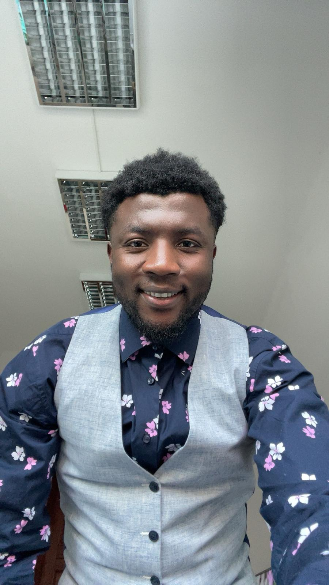

Biofarms
BiofarmsThe founder
Kisife Fomotar Jude
Environmental Intelligence Specialist & Founder, Biofarms.ai

Current roles
Environmental Intelligence Specialist — Cleantech Nexus, Geneva
Environmental Science Expert — Alignerr
Environmental AI Data Contributor — Outlier.ai, Pegasus HLE Project
I am an environmental professional and field-verified intelligence specialist combining tropical forestry expertise, AI and machine learning capabilities, and hands-on remote sensing to deliver ground-truth insights at the intersection of forestry, biodiversity, climate policy, and emerging technology.
I founded Biofarms.ai in 2020 to bridge a gap I witnessed firsthand: European institutions and markets increasingly depend on environmental data from Africa's tropical landscapes — yet most of that data is generated at a distance, without the field credibility that rigorous verification demands.
My background runs through tropical forestry and six years of field conservation in Cameroon, including WWF partner capacity assessments and biodiversity monitoring in and around Campo Ma'an National Park. More recently, my AI work at Alignerr and on Outlier.ai's Pegasus HLE Project has put me at the frontier of environmental reasoning datasets for state-of-the-art models. With dual European MSc degrees, that field experience, and active AI roles, I bring academic rigour, on-the-ground experience, and technical capability to every engagement.
Education
MSc Tropical Forestry — Technische Universität Dresden, Germany (Erasmus Mundus / SUTROFOR scholarship)
MSc Forest & Nature Management — University of Copenhagen, Denmark
BSc Geography & Environmental Studies — Catholic University of Cameroon, Bamenda